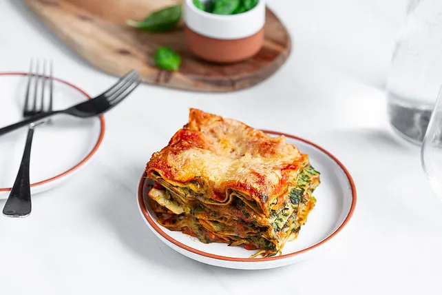

Veggie Lasagna

This is an easy recipe for a delicious vegetarian lasagna with spinache and tomato sauce.
- 600g frozen spinache
- 300g cheese
- 1 cup cream
- 500g passata tomata
- 1 onion
- 4 cloves of garlic
- 100g cream cheese
- Cut the onion and fry until glassy. Add the spinache and cream cheese. Spice with salt and pepper
- Press 2 cloves of garlic into some butter. Add flour and passata and let cook shortly.
- Layer prepared food into a casserole and bake at 200°C for 30 minutes. Then turn off the oven and let the lasagna rest for another 10 minutes.